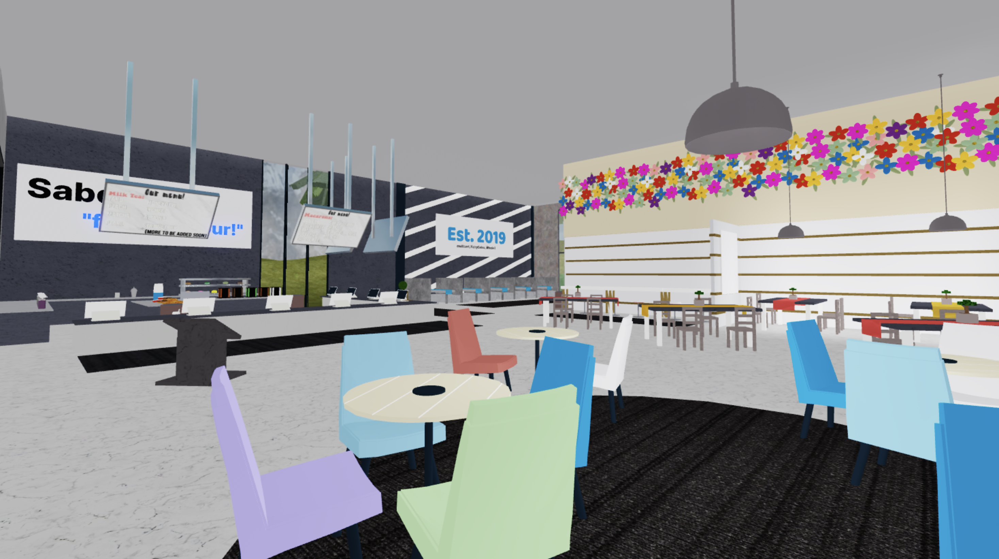
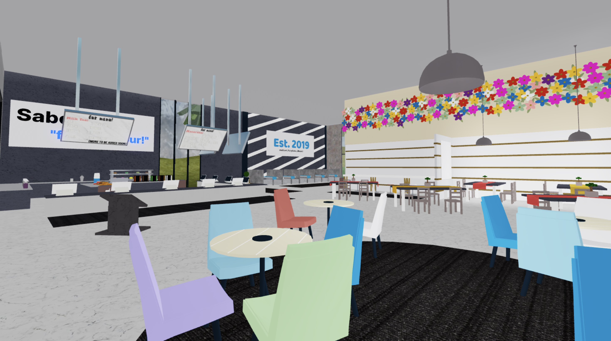
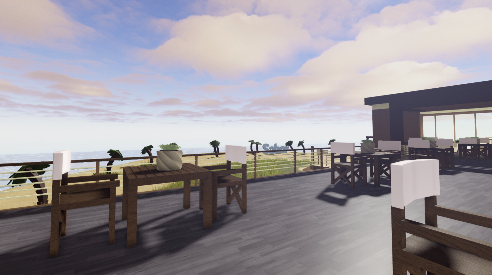
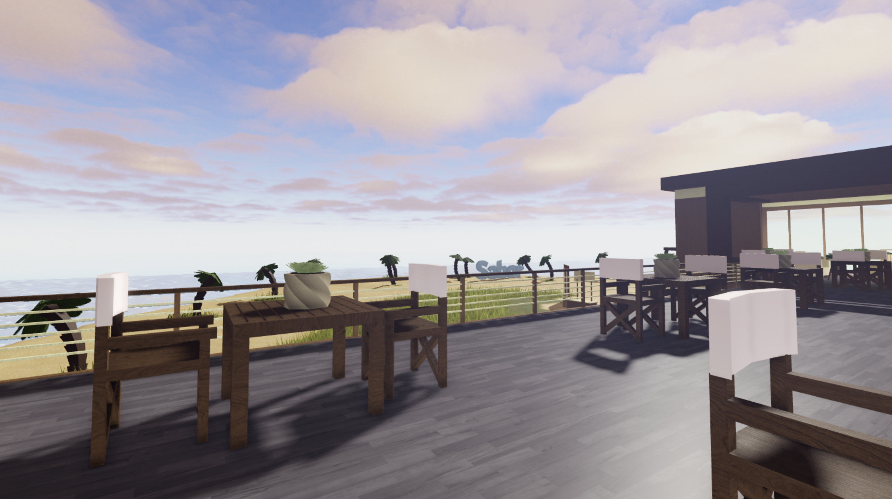

Sabor
- EST 2019As the co-founder of Sabor, I helped create and grow our community to over 29,000 members on Roblox and 600+ members on Discord. In 2019, Sabor was initially launched as a bubble tea cafe group, but have since expanded to include additional games, each developed to engage and entertain our community. Sabor also offers various virtual clothing, allowing users to express their unique style on their avatars.
View Group on RobloxMy Contributions
Game Design
Lead and designed the development of 3+ games including Sabor Cafe, GUESS THE K-POP, and run from kpop memes at 2am.
Community Management
Built and managed a community across Roblox, Discord and TikTok platforms.
Graphics Design
Designed various graphics for group events, game icons and thumbnails.
Developer Exchange (DevEx)
Contributed to over $5,000 USD through Roblox's DevEx program.
Sabor Cafe
Sabor Cafe is a virtual cafe where players can serve customers bubble tea and various desserts and munch on food while hanging out with friends.
Sabor Throughout the Years
Purely built and scripted by countless tutorials followed.
 


A significant update that made the cafe a lot more easy on the eyes.

 

Our latest version featuring a complete redesign with modern aesthetics and a more customizable menu.


Guess the KPOP
I led a team of developers to launch the game "GUESS THE KPOP" by coordinating development tasks and overseeing game design, resulting in over 7.4 million visits. Some of my personal contributions include user interface designs and the game icon and thumbnail graphics.
Virtual Clothing
Designed and launched a collection of virtual clothing items for users to purchase, and wear on their avatars.